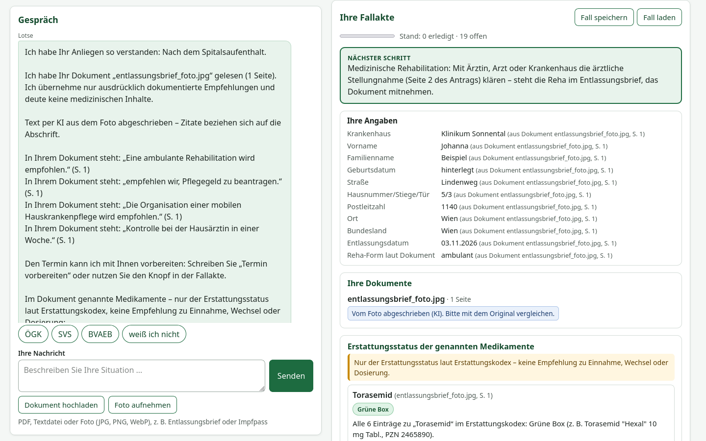
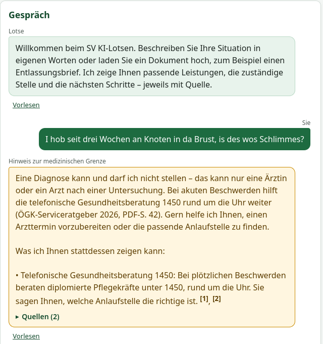

Vom ersten Satz zum vorausgefüllten Antrag – mit Quelle für jede Aussage.
Team Nexovo · KI Challenge 2026 · Use Case 1
Nach einem Spitalsaufenthalt stehen im Entlassungsbrief der SV-Box:
5 · 4 · 4
5 Aufgaben, 4 Stellen, 4 Formulare – verteilt auf PVA, ÖGK, FSW und Ärztin.
„Meine Mutter braucht jetzt Hilfe, was muss ich denn da machen?“

Pflegegeld Stufe 3 2026: 592,60 € aus der Anpassungsverordnung BGBl. II Nr. 263/2025 – nicht die 451,80 € aus § 5 BPGG, die eine reine Ähnlichkeitssuche liefert.
„In Ihrem Dokument steht: ‚Rehabilitationsantrag vorbereiten‘ (S. 7)“ – keine Diagnose, keine Interpretation.
Stammdaten aus dem Brief landen direkt in den AcroForm-Feldern der echten Anträge.
Rechtstexte, Serviceratgeber, Formulare, Honorarordnungen und Erstattungskodex in einer Antwort – mit Fundstelle und Rechtsstand.
„Mama schafft's daheim nimma allein“ oder Türkisch – der Lotse versteht es und antwortet in der gewählten Sprache.
Fallakte mit Schritten, Status und nächstem Schritt; speichern, später fortsetzen.

| Baustein | Umsetzung | Nachweis |
|---|---|---|
| Wissensbasis | 14.244 SozDok-Rechtstexte + PDF-Seiten, lokaler BM25-Index | 20/20 Sollquellen in den Top 5 |
| Leistungskatalog | 46 Leistungen in 5 Lebenslagen, 327 Belege, 9 Bundesländer | jedes lokale Zitat wörtlich auf der genannten Seite geprüft |
| Dokumente | PDF, Text und Foto (KI-Abschrift) | alle 5 Aufgaben des Entlassungsbriefs erkannt |
| Grenze | Regeln + Modellprüfung | 0 Fehlalarme bei Verwaltungsfragen im Testset |
| Software | Python, FastAPI, Container, offline lauffähig | 625 automatisierte Tests, Python 3.12 und 3.14 |
Der Lotse stellt keine Diagnosen, deutet keine Befunde, bewertet keine Risiken und empfiehlt keine Therapien oder Medikamente.
Live-Demo: Entlassungsbrief → Fallakte → Antrag
Code, Doku und Tests: github.com/KIChallenge/Nexovo
Demo-Video (94 s): docs/praesentation/demo.mp4